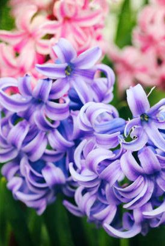
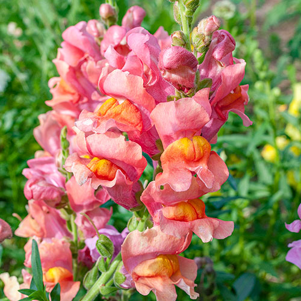

Hyacinths: The Hyacinth is a hardy, perennial, bulbous herb in the Hyacinthaceae (hyacinth) family. It is native to Eurasia, Mediterranean, and southern Turkey. A large number of hybrid cultivars are available. Hyacinth grows in organically rich, medium moisture, well-drained soils in full sun to partial shade.
\
Snapdragon: The Snapdragons are mostly short-lived perennial plants, though some species are annuals. The simple leaves are usually lance-shaped. The flowers are tubular, bilaterally symmetrical, and usually large with a closed liplike mouth that excludes most insects but can be forced open by strong bees, the main pollinators.
